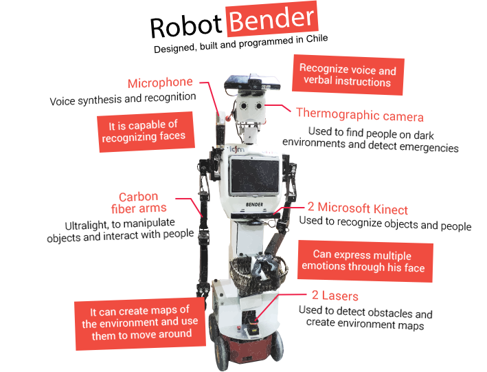

About
Bender is a humanoid service robot from the Universidad de Chile, designed for human-robot interaction (HRI) in domestic environments. Using a wide set of capabilities including, showing emotions, face recognition, and voice synthesis/recognition, Bender can interact with people. Futhermore, he can recognize and manipulate objects and navigate through dynamic environments avoiding obstacles, in order to help with basic tasks at a home.
Bender was created by the Uchile Homebreakers team in 2007, at the Robotics Laboratory of the Electric Engineering Department. He used as a platform for the latest research and is under constant development, and once a year he participates in the RoboCup @Home international robotics competition. He has reached the 5th place among 24 teams, and thanks to his ability to show emotions he won the design innovation award in 2007 and 2008.
Now, the team is working towards upcoming competitions, and to give talks in different schools and Universities in Chile, as an effort to spark the robotics interest among students.
The Robot
Development
Bender is developed under Ubuntu 20.04LTS using the ROS Noetic framework. Manipulation and Navigation capabilities are built on top of standard libraries such as MoveIt and the ROS Navigation stack. Speech Recognition is achieved using Whisper.
Our code is hosted in public repositorieson on GitHub.